Soru 1Cevap: C
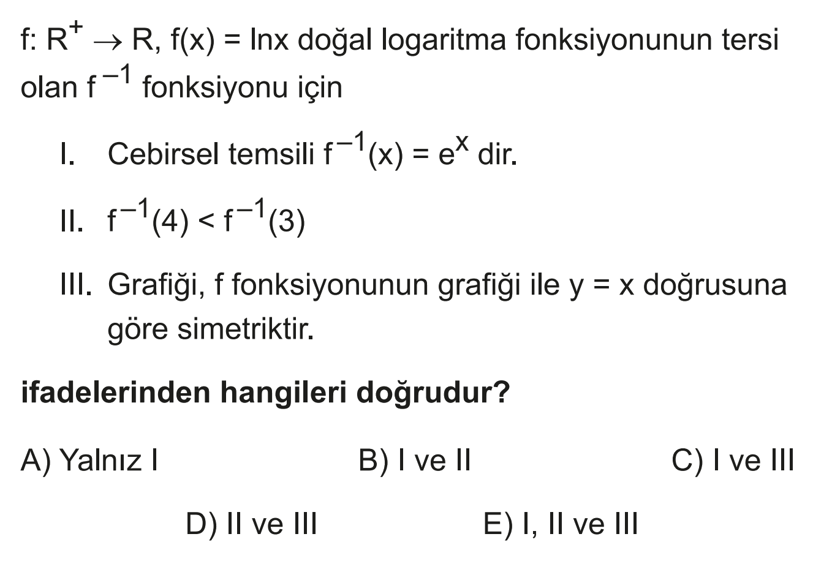
Çözüm
- $\ln x$'in tersi $e^x$ (I doğru).
- $e^x$ artan: $f^{-1}(4)\gt f^{-1}(3)$ (II yanlış).
- Bir fonksiyon ile tersi $y=x$'e göre simetriktir (III doğru). I ve III (C).
Cevap: C
Soru 2Cevap: D
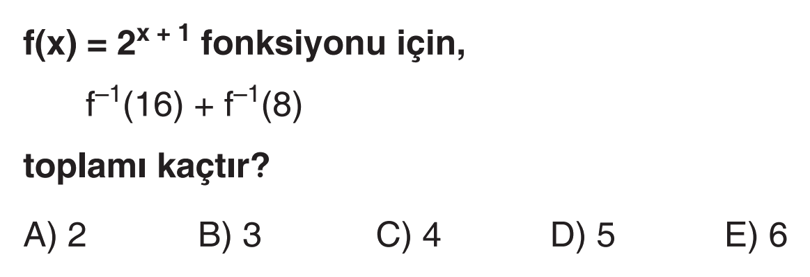
Çözüm
- $f^{-1}(16)=a\iff f(a)=16\Rightarrow2^{a+1}=2^4\Rightarrow a=3$.
- $f^{-1}(8)=b\iff2^{b+1}=2^3\Rightarrow b=2$.
- Toplam $3+2=5$ (D).
Cevap: D
Soru 3Cevap: E
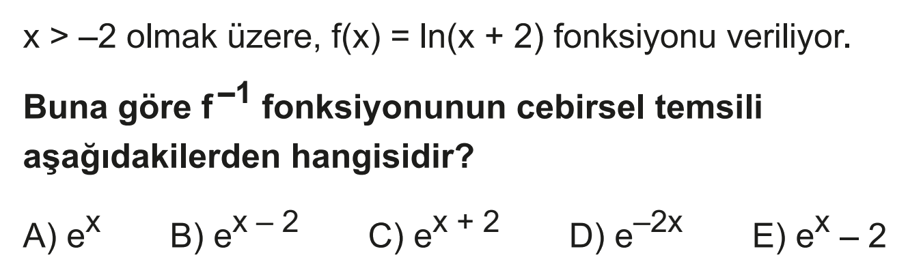
Çözüm
- $y=\ln(x+2)\Rightarrow x+2=e^y$.
- $x=e^y-2$.
- $f^{-1}(x)=e^x-2$ (E).
Cevap: E
Soru 4Cevap: B
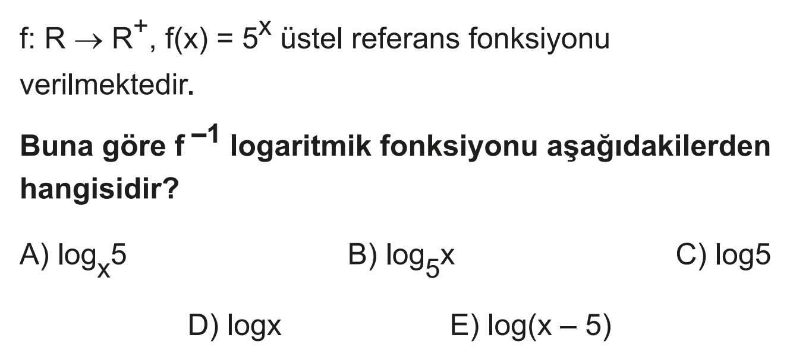
Çözüm
- $y=5^x\iff x=\log_5y$.
- $x$ ile $y$ yer değiştirir.
- $f^{-1}(x)=\log_5x$ (B).
Cevap: B
Soru 5Cevap: A
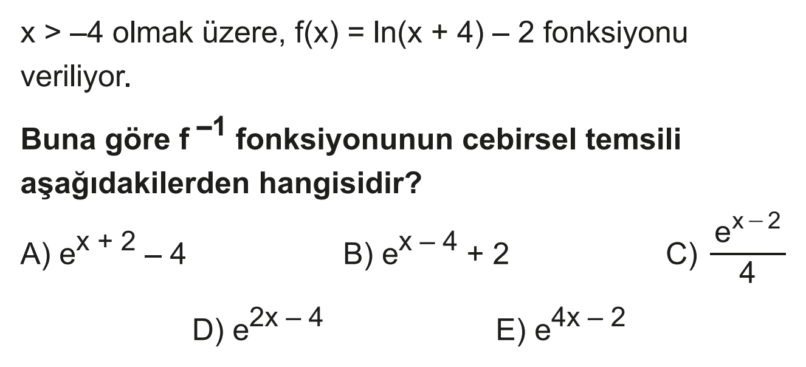
Çözüm
- $y=\ln(x+4)-2\Rightarrow\ln(x+4)=y+2$.
- $x+4=e^{y+2}$.
- $f^{-1}(x)=e^{x+2}-4$ (A).
Cevap: A
Soru 6Cevap: B
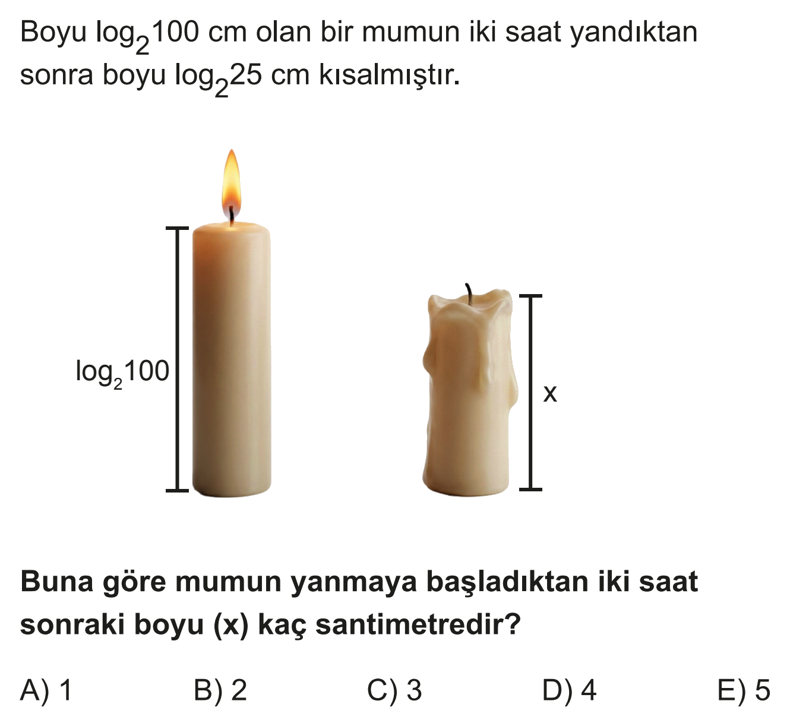
Çözüm
- $x=\log_2100-\log_225$.
- $=\log_2\dfrac{100}{25}=\log_24$.
- $=2$ cm (B).
Cevap: B
Soru 7Cevap: C
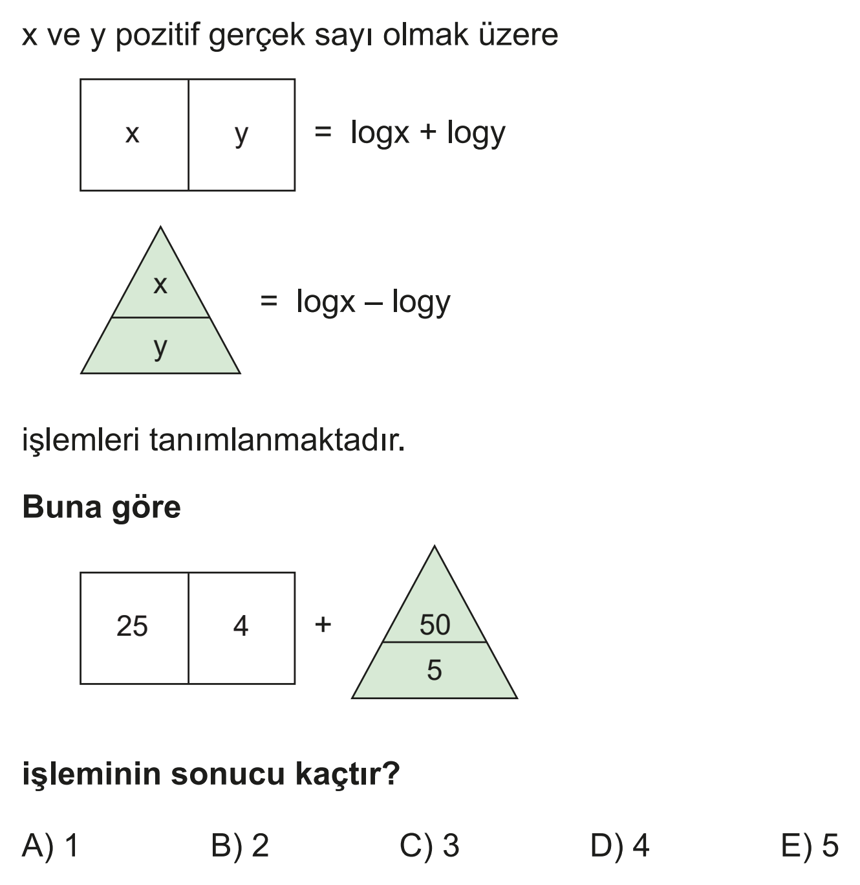
Çözüm
- Dikdörtgen: $\log25+\log4=\log100=2$.
- Üçgen: $\log50-\log5=\log10=1$.
- Toplam $3$ (C).
Cevap: C
Soru 8Cevap: B
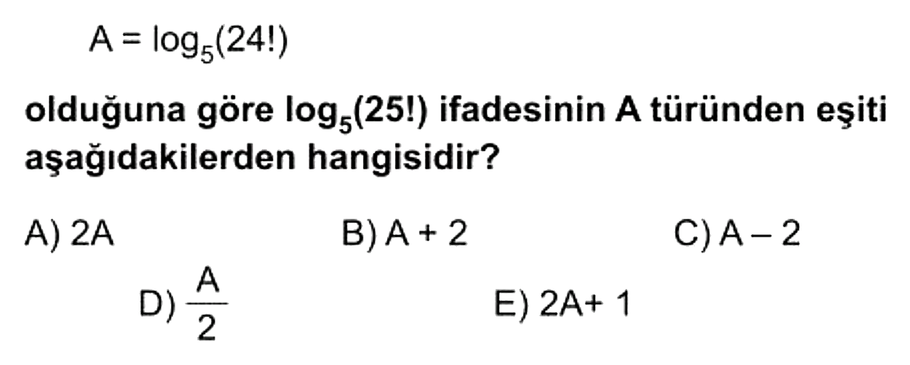
Çözüm
- $25!=25\cdot24!$.
- $\log_525!=\log_525+\log_524!$.
- $=A+2$ (B).
Cevap: B
Soru 9Cevap: B
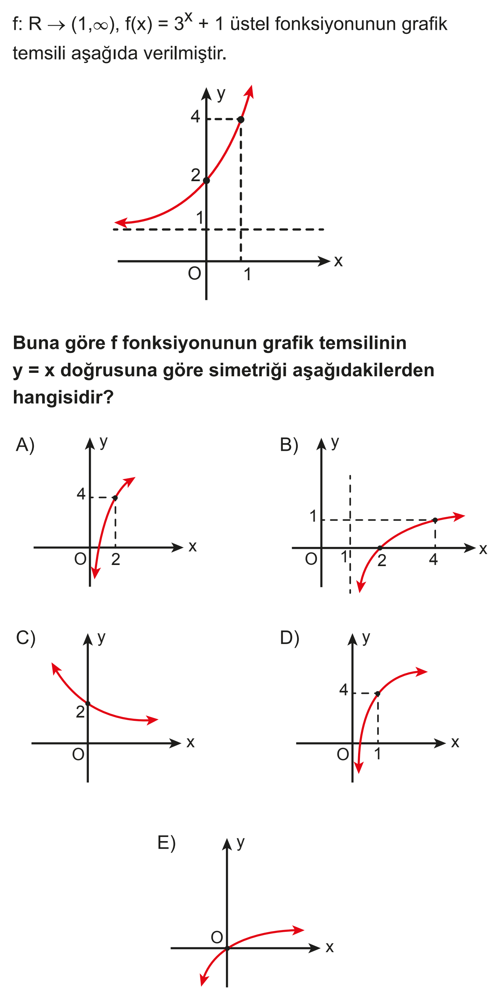
Çözüm
- $f$'nin grafiği $(0,2)$, $(1,4)$'ten geçer; asimptot $y=1$.
- $y=x$'e göre simetriği: $(2,0)$, $(4,1)$'den geçer; asimptot $x=1$.
- Bu özellikteki grafik B.
Cevap: B
Soru 10Cevap: B
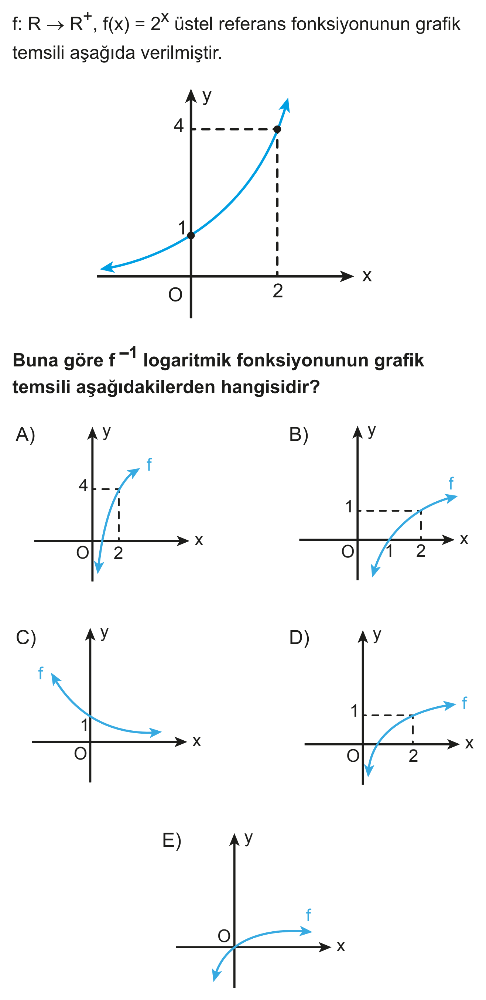
Çözüm
- Grafik $(2,4)$'ten geçiyor: $f(2)=4$; ters fonksiyon $\log_2x$.
- $f^{-1}(1)=0$, $f^{-1}(2)=1$: $(1,0)$ ve $(2,1)$'den geçer.
- Bu noktalardan geçen artan logaritmik grafik B.
Cevap: B
Soru 11Cevap: A
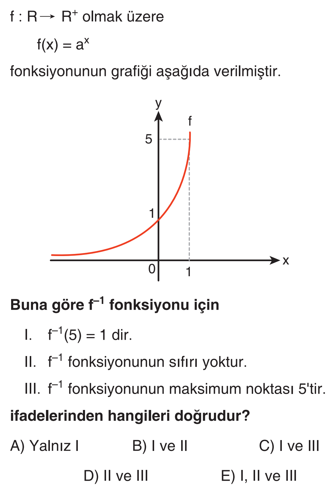
Çözüm
- Grafik $(1,5)$'ten geçer: $a^1=5\Rightarrow f(x)=5^x$, $f^{-1}(x)=\log_5x$.
- $f^{-1}(5)=1$ (I doğru); $f^{-1}(1)=0$, sıfırı $x=1$'dir (II yanlış).
- $\log_5x$ üstten sınırsız, maksimum noktası yok (III yanlış). Yalnız I (A).
Cevap: A
Soru 12Cevap: C
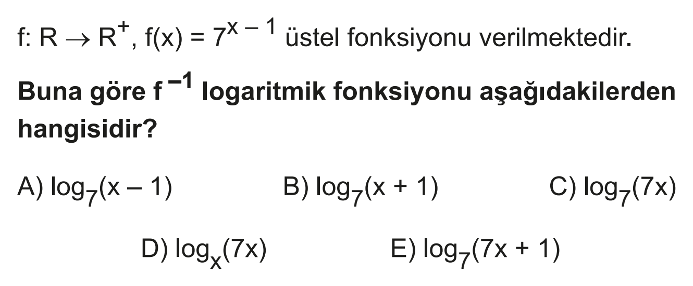
Çözüm
- $y=7^{x-1}\Rightarrow x-1=\log_7y$.
- $x=1+\log_7y=\log_77+\log_7y=\log_7(7y)$.
- $f^{-1}(x)=\log_7(7x)$ (C).
Cevap: C
Soru 13Cevap: B
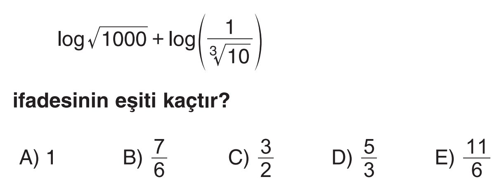
Çözüm
- $\log\sqrt{1000}=\log10^{3/2}=\tfrac32$.
- $\log\dfrac1{\sqrt[3]{10}}=\log10^{-1/3}=-\tfrac13$.
- $\tfrac32-\tfrac13=\tfrac76$ (B).
Cevap: B
Soru 14Cevap: E
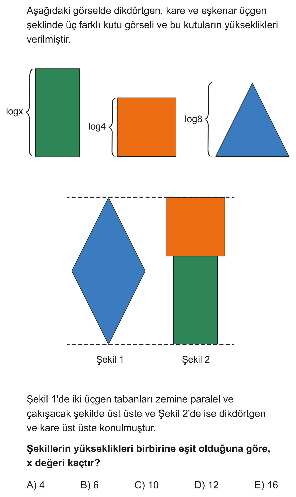
Çözüm
- Şekil 1'de iki üçgen: yükseklik $2\log8=\log64$.
- Şekil 2: $\log x+\log4=\log64$.
- $4x=64\Rightarrow x=16$ (E).
Cevap: E
Soru 15Cevap: D
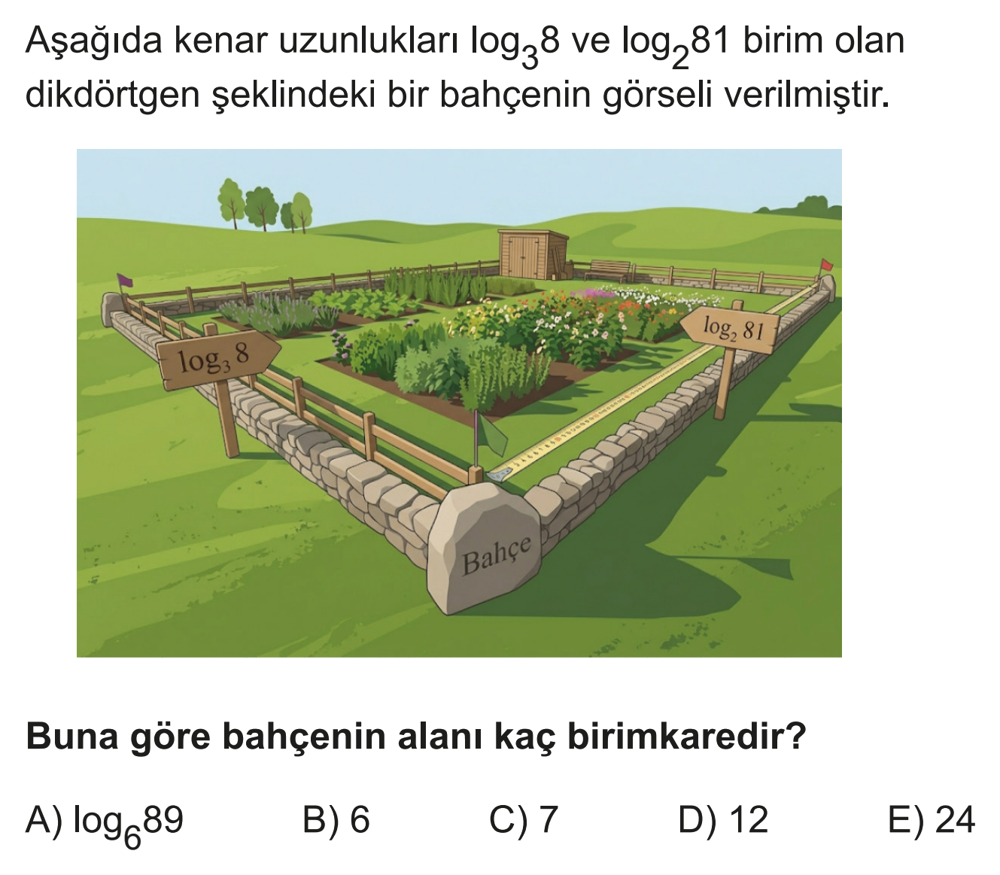
Çözüm
- Alan $=\log_38\cdot\log_281$.
- $=3\log_32\cdot4\log_23=12\log_32\cdot\log_23$.
- $=12$ (D).
Cevap: D
Soru 16Cevap: E
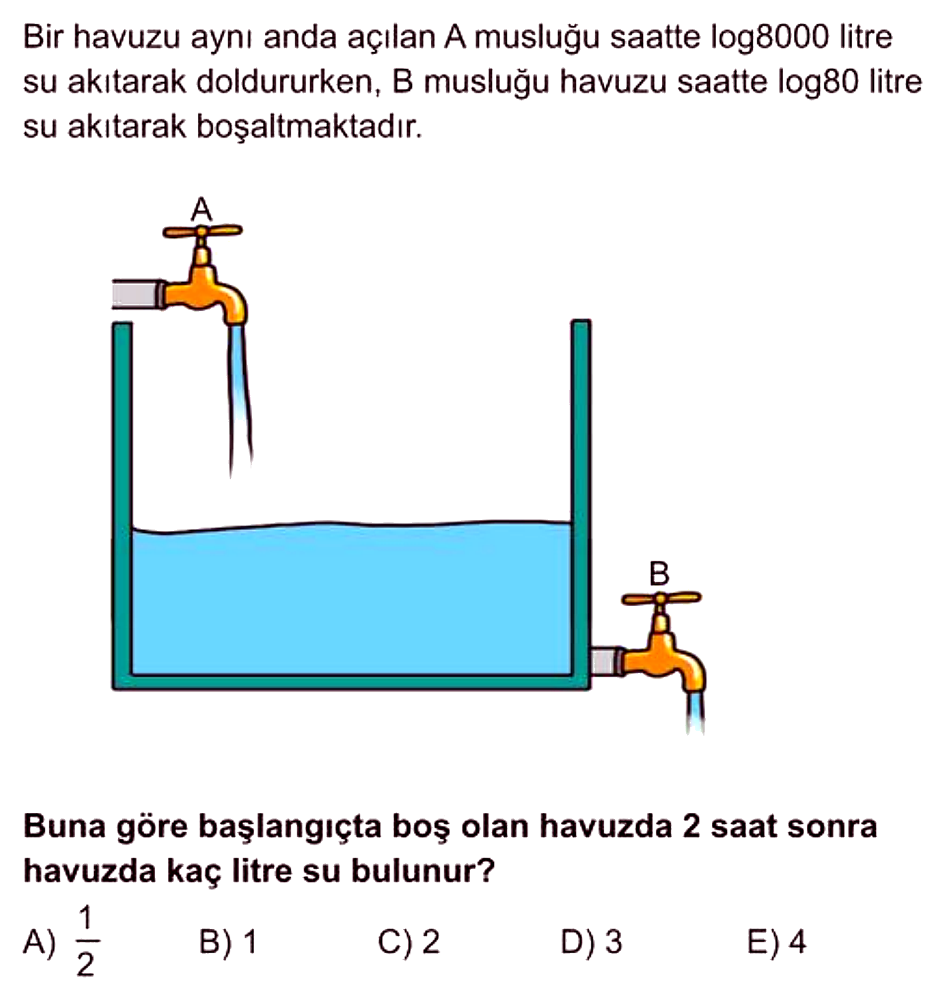
Çözüm
- Saatlik net artış $\log8000-\log80=\log100=2$ litre.
- $2$ saatte $2\cdot2$.
- $4$ litre (E).
Cevap: E
Soru 17Cevap: E
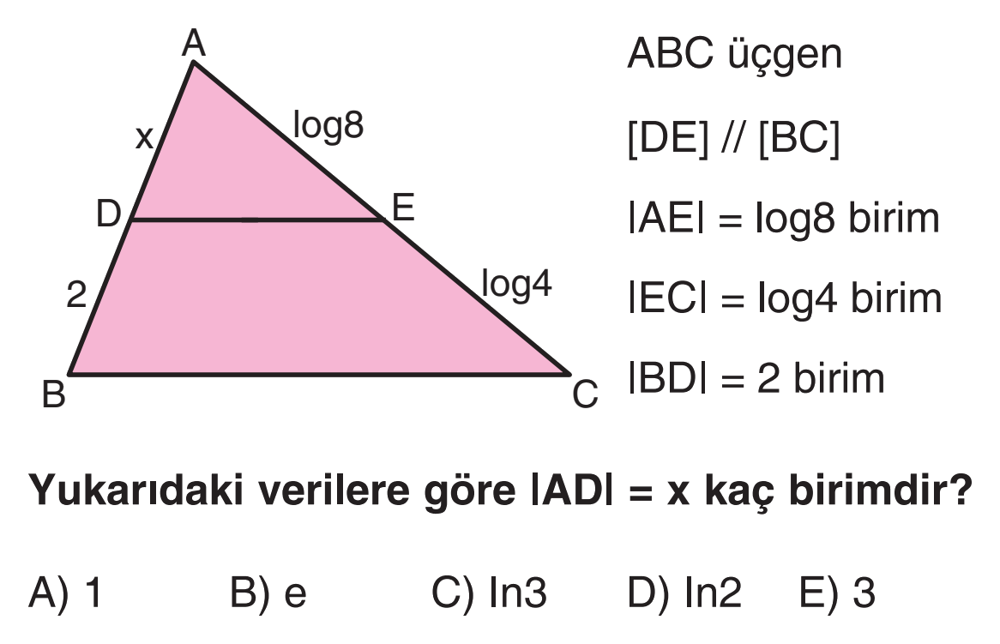
Çözüm
- $[DE]\parallel[BC]$: $\dfrac{|AD|}{|DB|}=\dfrac{|AE|}{|EC|}$.
- $\dfrac x2=\dfrac{\log8}{\log4}=\dfrac{3\log2}{2\log2}=\dfrac32$.
- $x=3$ (E).
Cevap: E
Soru 18Cevap: E
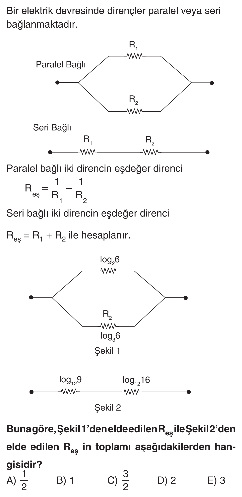
Çözüm
- Şekil 1: $\dfrac1{R}=\dfrac1{\log_26}+\dfrac1{\log_36}=\log_62+\log_63=1\Rightarrow R=1$.
- Şekil 2: $\log_{12}9+\log_{12}16=\log_{12}144=2$.
- Toplam $1+2=3$ (E).
Cevap: E
Soru 19Cevap: A
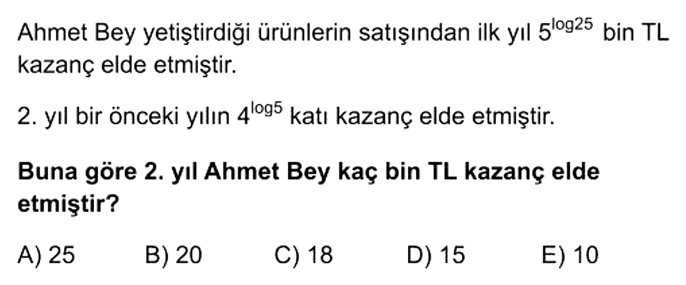
Çözüm
- $5^{\log25}=25^{\log5}$.
- 2. yıl: $25^{\log5}\cdot4^{\log5}=100^{\log5}$.
- $=(10^{\log5})^2=25$ bin TL (A).
Cevap: A
Soru 20Cevap: D
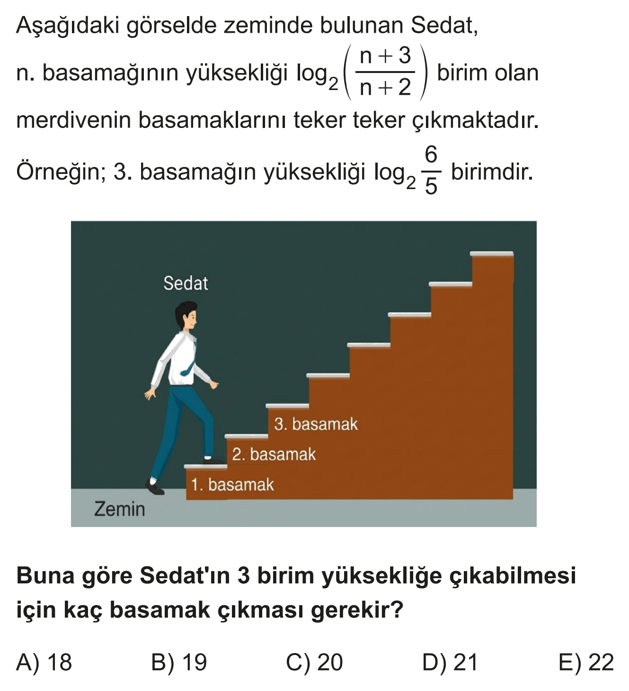
Çözüm
- İlk $k$ basamak: $\log_2\left(\tfrac43\cdot\tfrac54\cdots\tfrac{k+3}{k+2}\right)=\log_2\dfrac{k+3}3$.
- $\log_2\dfrac{k+3}3=3\Rightarrow k+3=24$.
- $k=21$ basamak (D).
Cevap: D